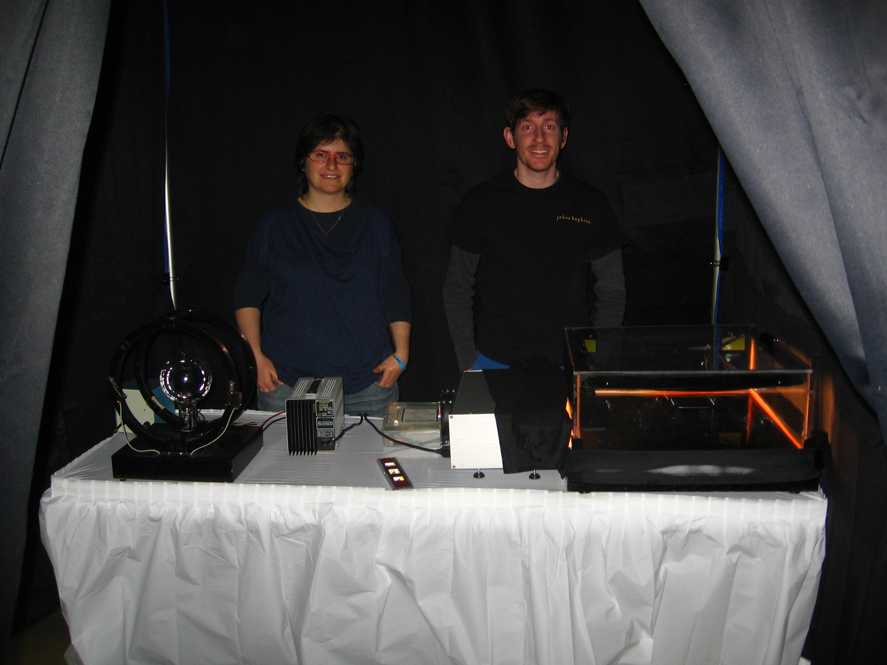
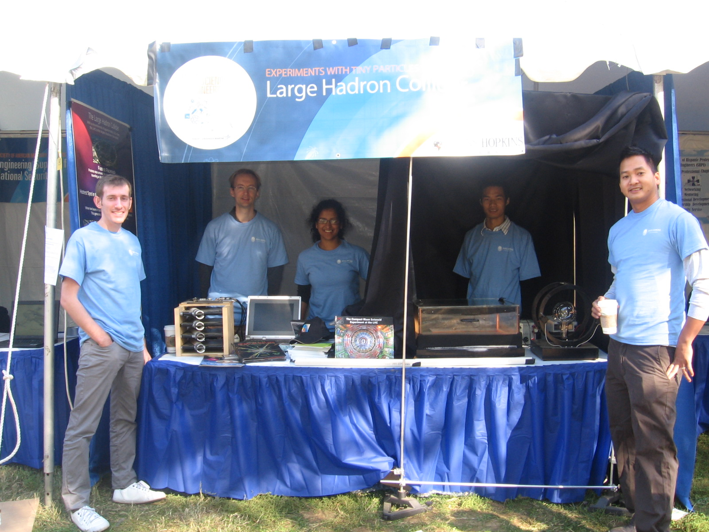

Standard Model Particles

I am currently working on new project to develop interactive web-based educational toos.
I have started with this simple one, which is an animated version of a famous cartoon of
the standard model of particle physics (see picture above taken from
wikipedia...
2012 USA Sci. & Eng. Festival

This year's science and engineering festival was held at the
Walter E Washington Convention Center.
The exhibit consisted of a cloud chamber, a cosmic ray detector, a cathode-ray, and
a mock accelerator for kids. The picture to the left shows our ...
2010 USA Sci. & Eng. Festival

In October of 2010 myself and others from JHU participated in the inaugural
USA Science and Engineering Festival, which was held on the national mall.
As usual, our demonstrations consisted of a cloud chamber, a cosmic ray
detector, and a cathode-ray...
Development of Visual Aids

Together with an undergraduate student we developed a computer model of
the cosmic ray detector. A MC program was written which could model the
angular distribution of cosmic ray tracks as well as a visualization
which will draw tracks passing ...